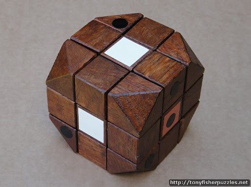
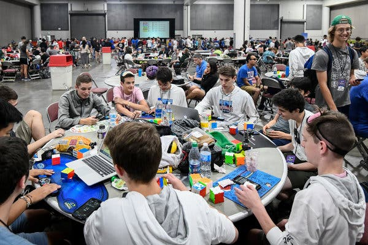
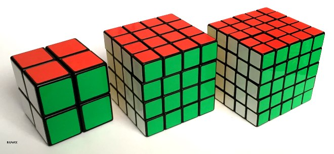
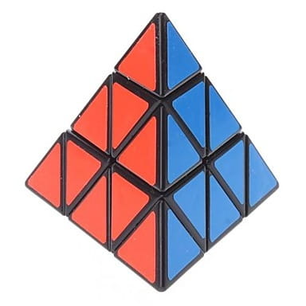
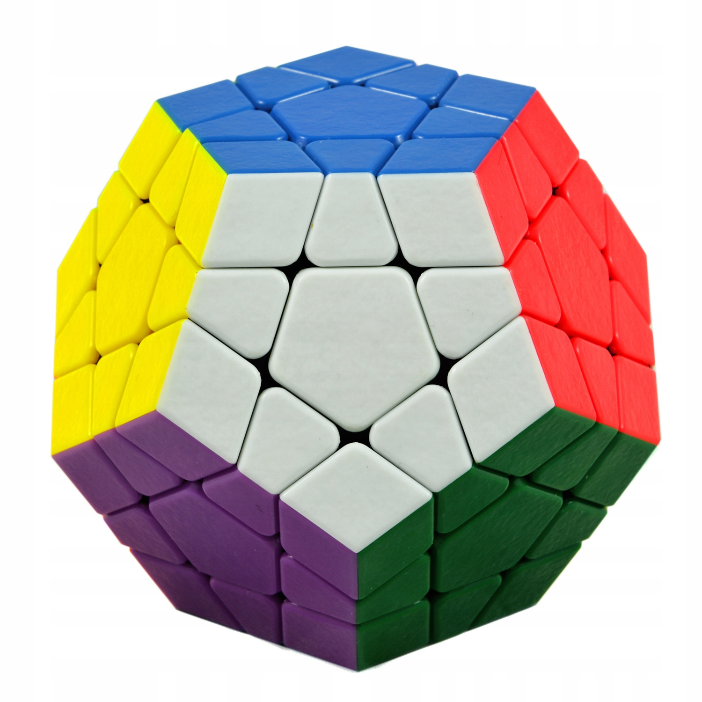

Kostka Rubika - moja pasja |
|||||
| Strona główna | Historia | Ciekawostki | Galeria zdjęć | Kontakt | |
|
Węgierski nauczyciel projektowania i poważny łamigłówkarz, Erno Rubik, zmontował swoją pierwszą kostkę w 1974 roku i nazwał ją Magiczną Kostką. Po tym, jak agent zabawek pokazał łamigłówkę firmie produkującej zabawki, Ideal Toy & Novelty Company, nazwę układanki zmienono na Rubik's Cube i zaczęto sprzedawać ją wsklepach w 1980roku. Wkrótce po tym każdy na świecie chciał układać kostkę. W ciągu dwóch lat sprzedano ich ponad sto milionów, dzięki czemu Kostka Rubika zdobyła tytuł najpopularniejszej łamigłówki w historii. Jej sukces przyczynił się do powstania setek produktów pochodnych, od bestsellerowych książek o tym, jak ją rozwiązać, po naruszające patenty podróbki innych producentów. Erno Rubik ze swoim wynalazkiem
Choć media najpierw obiegła historia o tym, że Rubik zaprojektował kostkę, aby pomóc uczniom w nauce o obiektach trójwymiarowych, sam Rubik przyznał później, że celowo zaprojektował łamigłówkę opartą na geometrii. 27 małych kostek zwanych "cubies" tworzyło naprawdę trudną łamigłówkę. Każda z nich miała jeden z sześciu kolorów, a po złożeniu tworzyły kwadrat. Wyzwaniem dla Rubika było znalezienie sposobu, aby sześciany mogły przesuwać się i obracać obok siebie, a jednocześnie trzymać się razem jako całość. Jego kluczowe spostrzeżenie polegało na tym, że jeśli poszczególne klocki zawisną na zaokrąglonym rdzeniu, będą mogły się swobodnie poruszać, zachowując kształt sześcianu. Replika drewnianego prototypu Magicznej Kostki
Młodzi łamigłówkarze, znani jako "cubers", są przyciągnięci pozorną prostotą łamigłówki i często potrafią dostrzec wzory - zwane przez nich algorytmami - niezbędne do rozwiązania sześcianu. Od 2003 roku World Cube Association zarządza listą rekordów w układaniu kostki na czas. Stowarzyszenie, oddane sprawiedliwości i zabawie, prowadzi ewidencję rekordów w kategoriach takich jak m. in. układanie kostki z zamkniętymi oczami, jedną ręką oraz w jak najmniejszej ilości ruchów. Speedcuberzy przygotowujący się do zawodów
Na dzień dzisiejszy istnieje wiele łamigłówek, działających na podobnej zasadzie co Kostka Rubika, m.in. kostka 4x4x4 (zwana "profesorską"), kostka 5x5x5 (zwana "zemstą Rubika"), megaminx (dwunastościan z różną ilością elementów na krawędzi), pyraminx (w kształcie piramidy) oraz wiele innych. Inne rozmiary kostek: 2x2, 4x4, 5x5

Pyraminx

Megaminx
|
Źródła |
||||